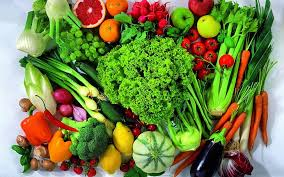
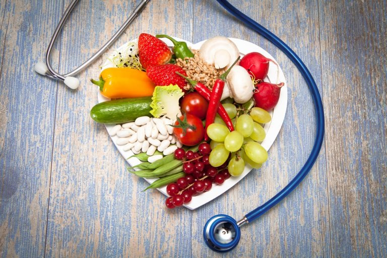
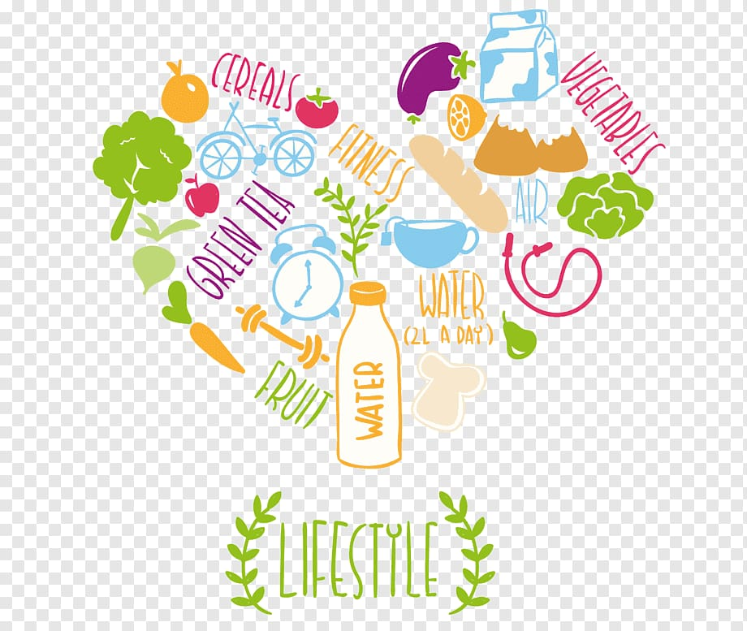
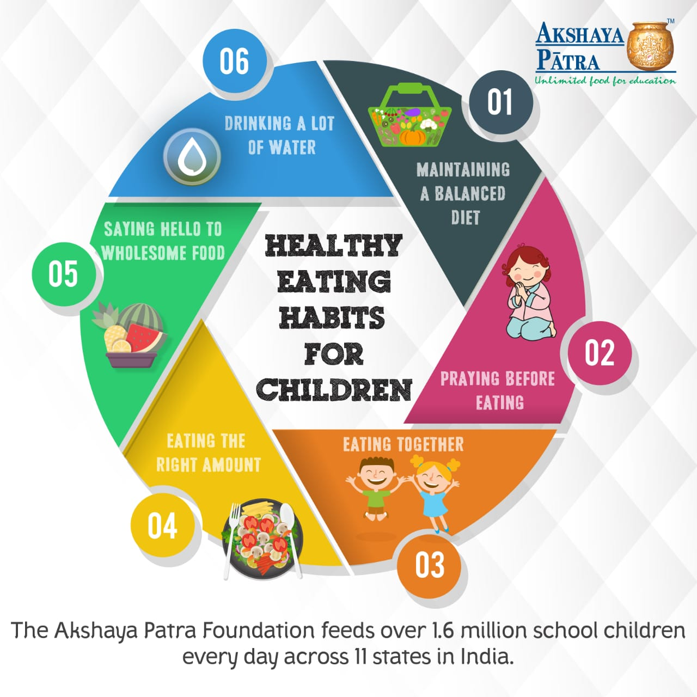

Food Choices
INVESTIGATING STUDENT FOOD CHOICE DETERMINANTS WEBSITE
Welcome to Healthy Habituals,where we believe that good health is the foundation for a fulfilling life.Good health is more important than being free from disease. Healthy people are more efficient, productive and live longer than unfit people

Our mission is to educate and empower individuals to make informed food choices that promote optimal health and well-being. We strive to cultivate a deeper understanding of the relationship between food habits and health issues, and to provide practical strategies for achieving and maintaining a healthy lifestyle. Through our research and guidance, we aim to reduce the prevalence of obesity and related health conditions in our community.

A balanced diet is essential for maintaining good health and well-being. It provides the necessary nutrients, vitamins,and minerals that your body needs to function properly. In this article,we will explore the key components of a ,balanced diet and how you can incorporate them into your daily meals for optimal health.
Food habits

Eat smaller meals and snacks more frequently. Eating six or seven or eight times a day might be more easily tolerated than eating the same amount of food in three meals. Talk to your provider. Sometimes, poor appetite is due to depression, which can be treated. Your appetite is likely to improve after depression is treated. Avoid non-nutritious beverages such as black coffee and tea; instead choose milk and juices.Try to eat more protein and fat, and less simple sugars. Walk or participate in light activity to stimulate your appetite. Drink beverages after a meal instead of before or during a meal so you do not feel as full.Plan meals to include your favorite foods.Try eating the high-calorie foods in your meal first. Use your imagination to increase the variety of food you're eating.Take advantage of times of the day when your appetite is best. For example, some people have a better appetite in the morning and can eat a larger breakfast.Don't waste your energy eating foods that provide little or no nutritional value (such as potato chips, candy bars, colas and other snack foods).
